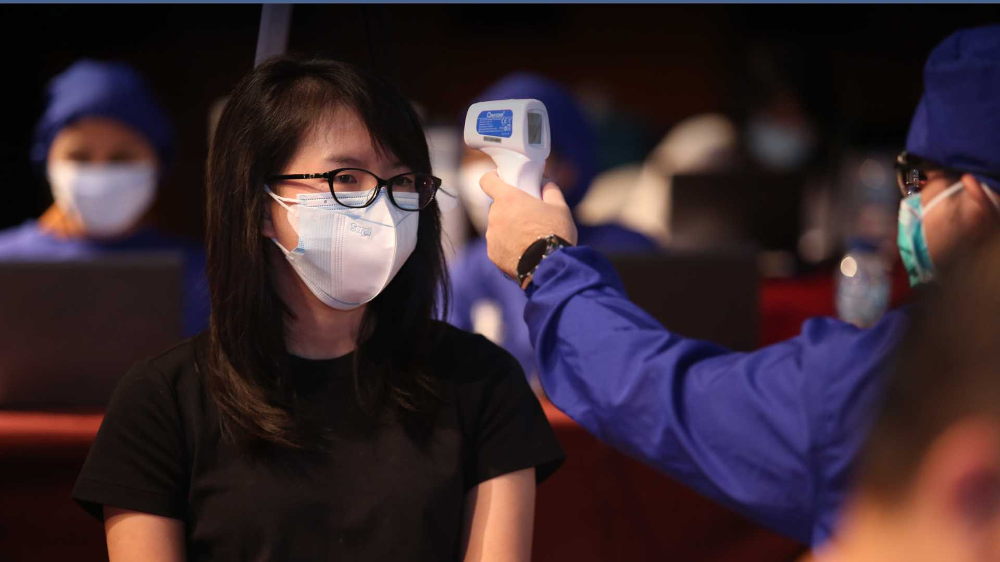
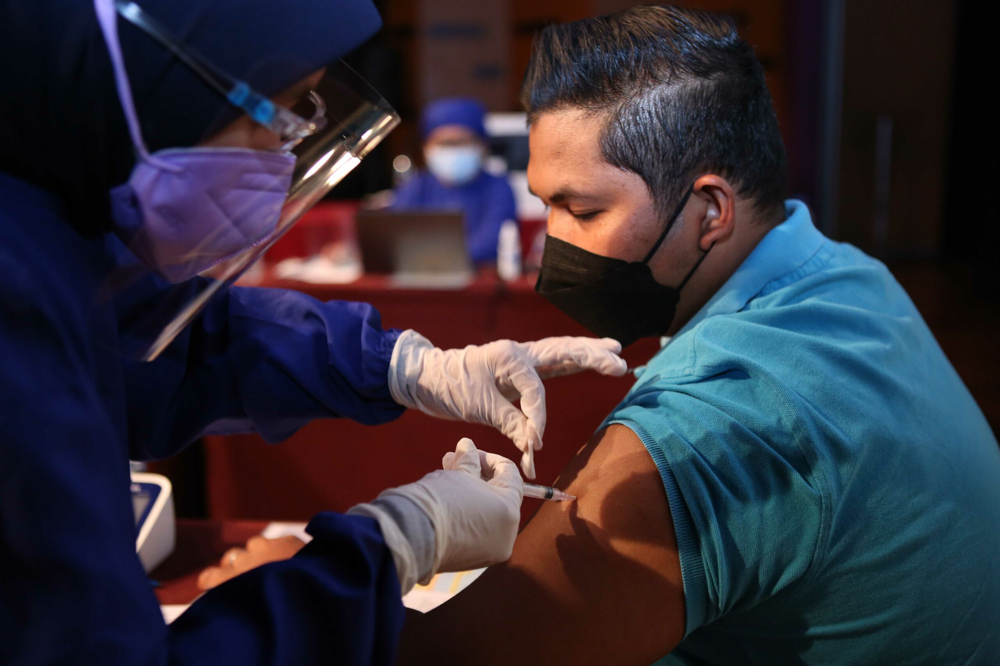
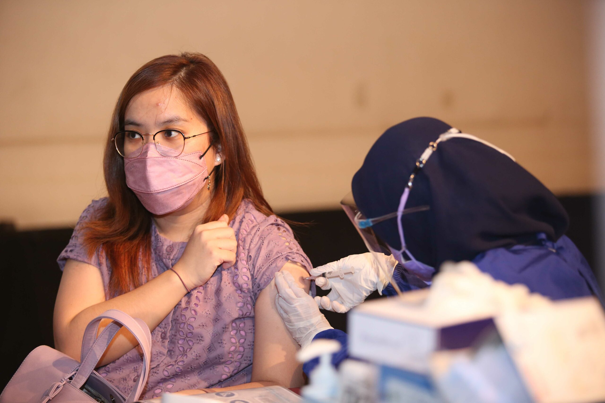
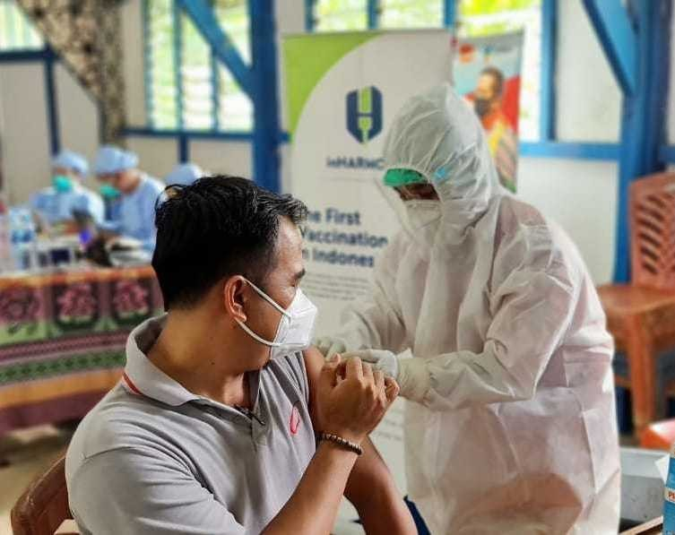
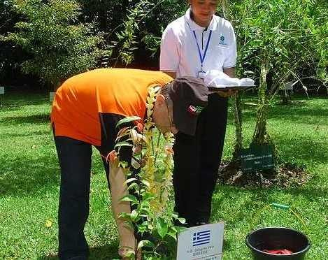

				<main id="qodef-page-content" class="qodef-grid qodef-layout--template ">
					<div class="qodef-grid-inner clear">
						<div class="qodef-grid-item qodef-page-content-section qodef-col--12">
							<div data-elementor-type="wp-page" data-elementor-id="5490"
								class="elementor elementor-5490">
								<section
									class="elementor-section elementor-top-section elementor-element elementor-element-759a4a1 elementor-section-height-full elementor-section-items-stretch elementor-section-boxed elementor-section-height-default qodef-elementor-content-no"
									data-id="759a4a1" data-element_type="section" data-e-type="section">
									<div class="elementor-container elementor-column-gap-no">
										<div class="elementor-column elementor-col-100 elementor-top-column elementor-element elementor-element-3ffac02"
											data-id="3ffac02" data-element_type="column" data-e-type="column">
											<div class="elementor-widget-wrap elementor-element-populated">
												<div class="elementor-element elementor-element-ae70d5c elementor-widget elementor-widget-slider_revolution"
													data-id="ae70d5c" data-element_type="widget" data-e-type="widget"
													data-widget_type="slider_revolution.default">
													<div class="elementor-widget-container">
														<div class="wp-block-themepunch-revslider">
															<p class="rs-p-wp-fix"></p> <rs-module-wrap
																id="rev_slider_12_1_wrapper" data-source="gallery"
																style="background:transparent;padding:0;"> <rs-module
																	id="rev_slider_12_1" style="" data-version="6.4.11">
																	<rs-slides> <rs-slide data-key="rs-37"
																			data-title="Slide"
																			data-thumb="images/csr_slider_1-50x100.jpg"
																			data-duration="5000ms" data-in="o:0;"
																			data-out="a:false;">  </rs-slide> <rs-slide
																			data-key="rs-36" data-title="Slide"
																			data-thumb="images/HP3A763-scaled-50x100.jpeg"
																			data-duration="5000ms" data-in="o:0;"
																			data-out="a:false;">  </rs-slide> <rs-slide
																			data-key="rs-38" data-title="Slide"
																			data-thumb="images/HP3A783-scaled-50x100.jpeg"
																			data-in="o:0;" data-out="a:false;">  </rs-slide> </rs-slides>
																	<rs-static-layers><rs-layer
																			id="slider-12-slide-12-layer-2"
																			class="custom-rs-shadow rs-layer-static"
																			data-type="text" data-rsp_ch="on"
																			data-xy="x:l,l,c,c;xo:60px,30px,0,0;y:b,b,m,m;yo:70px,70px,0,0;"
																			data-text="w:normal;s:60,53,65,55;l:88,78,70,55;a:left,left,center,center;"
																			data-dim="w:auto,auto,80%,80%;"
																			data-basealign="slide" data-onslides="s:1;"
																			data-frame_999="o:0;st:w;"
																			style="z-index:9;font-family:Lora;">Corporate
																			Social Responsibility </rs-layer><rs-layer
																			id="slider-12-slide-12-layer-7"
																			class="rs-layer-static" data-type="shape"
																			data-rsp_ch="on"
																			data-text="w:normal;s:20,17,12,7;l:0,22,15,9;"
																			data-dim="w:4000px,3548px,2509px,1547px;h:100%;"
																			data-basealign="slide" data-onslides="s:1;"
																			data-frame_999="o:0;st:w;"
																			style="z-index:8;background:linear-gradient(rgba(16,48,101,0.6) 0%, rgba(255,255,255,0) 100%);">
																		</rs-layer></rs-static-layers> </rs-module>
															</rs-module-wrap>
														</div>
													</div>
												</div>
											</div>
										</div>
									</div>
								</section>
								<section
									class="elementor-section elementor-top-section elementor-element elementor-element-f7f2714 elementor-section-boxed elementor-section-height-default elementor-section-height-default qodef-elementor-content-no"
									data-id="f7f2714" data-element_type="section" data-e-type="section"
									data-settings="{&quot;background_background&quot;:&quot;classic&quot;}">
									<div class="elementor-container elementor-column-gap-no">
										<div class="elementor-column elementor-col-100 elementor-top-column elementor-element elementor-element-3b9babf"
											data-id="3b9babf" data-element_type="column" data-e-type="column">
											<div class="elementor-widget-wrap elementor-element-populated">
												<div class="elementor-element elementor-element-4560131 elementor-widget elementor-widget-heading"
													data-id="4560131" data-element_type="widget" data-e-type="widget"
													data-widget_type="heading.default">
													<div class="elementor-widget-container">
														<h3 class="elementor-heading-title elementor-size-default">
															Creating a positive effect on lives and communities by
															adding the most value and making a significant and lasting
															impact through Gesit Foundation.</h3>
													</div>
												</div>
												<div class="elementor-element elementor-element-2fef7e8 elementor-widget elementor-widget-heading"
													data-id="2fef7e8" data-element_type="widget" data-e-type="widget"
													data-widget_type="heading.default">
													<div class="elementor-widget-container"> <span
															class="elementor-heading-title elementor-size-default">Our
															social investment programs focus on three areas:
															<strong>Healthcare, Environment &amp; Cultural
																Outreach,</strong> and <strong>
																Education.</strong></span></div>
												</div>
											</div>
										</div>
									</div>
								</section>
								<section
									class="elementor-section elementor-top-section elementor-element elementor-element-861be59 elementor-section-stretched zs-custom-height no-button mobile-justify-center elementor-section-boxed elementor-section-height-default elementor-section-height-default qodef-elementor-content-no"
									data-id="861be59" data-element_type="section" data-e-type="section"
									data-settings="{&quot;stretch_section&quot;:&quot;section-stretched&quot;,&quot;background_background&quot;:&quot;classic&quot;}">
									<div class="elementor-container elementor-column-gap-no">
										<div class="elementor-column elementor-col-33 elementor-top-column elementor-element elementor-element-2f9badc"
											data-id="2f9badc" data-element_type="column" data-e-type="column">
											<div class="elementor-widget-wrap elementor-element-populated">
												<div class="elementor-element elementor-element-7276c3b p-15 elementor-widget elementor-widget-thetrial_core_location_info"
													data-id="7276c3b" data-element_type="widget" data-e-type="widget"
													data-widget_type="thetrial_core_location_info.default">
													<div class="elementor-widget-container">
														<div
															class="qodef-shortcode qodef-m  qodef-location-info qodef-layout--text-below qodef-text-break--disabled">
															<div class="qodef-m-image"> </div>
															<div class="qodef-m-content"
																style="background-color: #BC9C33">
																<h5 class="qodef-m-title" style="color: #FFFFFF">
																	Healthcare</h5>
																<p class="qodef-m-text" style="color: #FFFFFF">We
																	provide initiatives that ensure proper medical
																	treatment and aid for the sick and injured. Our
																	focus goes beyond donations; we get involved in the
																	causes that help improve the infrastructures needed
																	to support healthcare.</p>
															</div>
														</div>
													</div>
												</div>
											</div>
										</div>
										<div class="elementor-column elementor-col-33 elementor-top-column elementor-element elementor-element-d0ecfb1"
											data-id="d0ecfb1" data-element_type="column" data-e-type="column">
											<div class="elementor-widget-wrap elementor-element-populated">
												<div class="elementor-element elementor-element-36c4e72 p-15 elementor-widget elementor-widget-thetrial_core_location_info"
													data-id="36c4e72" data-element_type="widget" data-e-type="widget"
													data-widget_type="thetrial_core_location_info.default">
													<div class="elementor-widget-container">
														<div
															class="qodef-shortcode qodef-m  qodef-location-info qodef-layout--text-below qodef-text-break--disabled">
															<div class="qodef-m-image"> </div>
															<div class="qodef-m-content"
																style="background-color: #BC9C33">
																<h5 class="qodef-m-title" style="color: #FFFFFF">
																	Environment &amp; Cultural Outreach</h5>
																<p class="qodef-m-text" style="color: #FFFFFF">We
																	provide cultural training, concerts, religious
																	infrastructure, and enforce diversity in our
																	society, but most importantly we prioritize
																	initiatives that improve the environments in which
																	we operate everyday.</p>
															</div>
														</div>
													</div>
												</div>
											</div>
										</div>
										<div class="elementor-column elementor-col-33 elementor-top-column elementor-element elementor-element-df100c7"
											data-id="df100c7" data-element_type="column" data-e-type="column">
											<div class="elementor-widget-wrap elementor-element-populated">
												<div class="elementor-element elementor-element-d719d27 p-15 elementor-widget elementor-widget-thetrial_core_location_info"
													data-id="d719d27" data-element_type="widget" data-e-type="widget"
													data-widget_type="thetrial_core_location_info.default">
													<div class="elementor-widget-container">
														<div
															class="qodef-shortcode qodef-m  qodef-location-info qodef-layout--text-below qodef-text-break--disabled">
															<div class="qodef-m-image"> </div>
															<div class="qodef-m-content"
																style="background-color: #BC9C33">
																<h5 class="qodef-m-title" style="color: #FFFFFF">
																	Education</h5>
																<p class="qodef-m-text" style="color: #FFFFFF">We
																	provide hands-on opportunities for disadvantaged
																	children through various initiatives, such as
																	scholarships. Most notably, we ensure that
																	educational facilities are available to the people
																	that we believe need it most.</p>
															</div>
														</div>
													</div>
												</div>
											</div>
										</div>
									</div>
								</section>
								<section
									class="elementor-section elementor-top-section elementor-element elementor-element-98a76e5 elementor-section-boxed elementor-section-height-default elementor-section-height-default qodef-elementor-content-no"
									data-id="98a76e5" data-element_type="section" data-e-type="section">
									<div class="elementor-container elementor-column-gap-no">
										<div class="elementor-column elementor-col-100 elementor-top-column elementor-element elementor-element-362aa85"
											data-id="362aa85" data-element_type="column" data-e-type="column">
											<div class="elementor-widget-wrap elementor-element-populated">
												<div class="elementor-element elementor-element-b18024b elementor-widget elementor-widget-heading"
													data-id="b18024b" data-element_type="widget" data-e-type="widget"
													data-widget_type="heading.default">
													<div class="elementor-widget-container">
														<h2 class="elementor-heading-title elementor-size-default">Our
															CSR Initiatives &amp; Programs</h2>
													</div>
												</div>
											</div>
										</div>
									</div>
								</section>
								<section
									class="elementor-section elementor-top-section elementor-element elementor-element-7d3d939 elementor-section-boxed elementor-section-height-default elementor-section-height-default qodef-elementor-content-no"
									data-id="7d3d939" data-element_type="section" data-e-type="section">
									<div class="elementor-container elementor-column-gap-no">
										<div class="elementor-column elementor-col-100 elementor-top-column elementor-element elementor-element-913ffdb"
											data-id="913ffdb" data-element_type="column" data-e-type="column">
											<div class="elementor-widget-wrap elementor-element-populated">
												<div class="elementor-element elementor-element-45f5edd elementor-widget elementor-widget-thetrial_core_accordion"
													data-id="45f5edd" data-element_type="widget" data-e-type="widget"
													data-widget_type="thetrial_core_accordion.default">
													<div class="elementor-widget-container">
														<div
															class="qodef-shortcode qodef-m  qodef-accordion clear qodef-behavior--accordion qodef-layout--simple">
															<h5 class="qodef-accordion-title"> <span
																	class="qodef-accordion-mark"> <span
																		class="qodef-icon--plus">+</span> <span
																		class="qodef-icon--minus">-</span> </span> <span
																	class="qodef-tab-title"> Healthcare </span></h5>
															<div class="qodef-accordion-content">
																<div class="qodef-accordion-content-inner"> <b
																		data-stringify-type="bold">Pandemic</b>
																	<ul>
																		<li>Distributing ventilators and PPE to 128
																			Hospitals across in Indonesia</li>
																		<li>Distributing food aid to people affected by
																			COVID in 5 provinces in Indonesia</li>
																	</ul> <b data-stringify-type="bold">Natural
																		Disaster</b>
																	<ul>
																		<li data-stringify-indent="1"
																			data-stringify-border="0">Rebuilding
																			healthcare facilities and hospitals</li>
																		<li data-stringify-indent="1"
																			data-stringify-border="0">Donating food and
																			other resources to victims of natural
																			disasters, such as the volcanic eruption at
																			Mount Merapi, Mentawai, the landslide at
																			Puncak and the floods in Jakarta</li>
																	</ul> <b data-stringify-type="bold">Medical
																		Equipment</b>
																	<ul>
																		<li data-stringify-indent="1"
																			data-stringify-border="0">Donating speedboat
																			ambulances in West Kalimantan</li>
																		<li data-stringify-indent="1"
																			data-stringify-border="0">Providing
																			ambulances for DKI Jakarta Region, in
																			partnership with Red Cross Indonesia</li>
																		<li data-stringify-indent="1"
																			data-stringify-border="0">Contributed in the
																			construction of YPAC (Yayasan Penyandang
																			Anak Cacat) by providing Aluminum Profile
																		</li>
																	</ul>
																</div>
															</div>
															<h5 class="qodef-accordion-title"> <span
																	class="qodef-accordion-mark"> <span
																		class="qodef-icon--plus">+</span> <span
																		class="qodef-icon--minus">-</span> </span> <span
																	class="qodef-tab-title"> Environment &amp; Cultural
																	Outreach </span></h5>
															<div class="qodef-accordion-content">
																<div class="qodef-accordion-content-inner">
																	<p><b data-stringify-type="bold">Environment</b></p>
																	<ul>
																		<li data-stringify-indent="1"
																			data-stringify-border="0">Developing water
																			projects and clean water facilities in
																			remote areas</li>
																		<li data-stringify-indent="1"
																			data-stringify-border="0">Creating and
																			maintaining roads and open road access in
																			some districts in Indonesia</li>
																		<li data-stringify-indent="1"
																			data-stringify-border="0">Collaborating with
																			Yayasan Kebun Raya Indonesia in the
																			conservation of endangered and rare
																			botanical species in Kebun Raya Cibodas and
																			Kebun Raya Bedugul, Bali</li>
																		<li data-stringify-indent="1"
																			data-stringify-border="0">Planting 1,000
																			trees in West Kalimantan Deforestation Areas
																		</li>
																	</ul>
																	<p><b data-stringify-type="bold">Cultural
																			Outreach</b></p>
																	<ul>
																		<li>Holding charitable concerts in partnership
																			with foreign embassies to gather donations
																			for disaster victims</li>
																		<li>Contributed to the construction of a mosque
																			in Ciloto-Puncak as well as renovation of
																			local churches and temples</li>
																	</ul>
																</div>
															</div>
															<h5 class="qodef-accordion-title"> <span
																	class="qodef-accordion-mark"> <span
																		class="qodef-icon--plus">+</span> <span
																		class="qodef-icon--minus">-</span> </span> <span
																	class="qodef-tab-title"> Education </span></h5>
															<div class="qodef-accordion-content">
																<div class="qodef-accordion-content-inner">
																	<ul class="p-rich_text_list p-rich_text_list__bullet"
																		data-stringify-type="unordered-list"
																		data-indent="0" data-border="false"
																		data-border-radius-top-cap="false"
																		data-border-radius-bottom-cap="false">
																		<li data-stringify-indent="0"
																			data-stringify-border="0">Building,
																			renovating, and providing school facilities
																			for:<br />- North Sumatera: Sekolah Mitra
																			Inalum<br />- Jakarta: Down Syndrome &amp;
																			Deaf School of Cempaka Putih<br />- Jakarta:
																			School of Yayasan Penyandang Anak
																			Cacat<br />- Fujian: Primary, Secondary
																			School, Sport and Library in Normal
																			University</li>
																		<li data-stringify-indent="0"
																			data-stringify-border="0">Providing over 300
																			university scholarships per year</li>
																	</ul>
																</div>
															</div>
														</div>
													</div>
												</div>
											</div>
										</div>
									</div>
								</section>
								<section
									class="elementor-section elementor-top-section elementor-element elementor-element-805a9c1 elementor-section-full_width elementor-section-height-default elementor-section-height-default qodef-elementor-content-no"
									data-id="805a9c1" data-element_type="section" data-e-type="section">
									<div class="elementor-container elementor-column-gap-no">
										<div class="elementor-column elementor-col-100 elementor-top-column elementor-element elementor-element-aa5a11e"
											data-id="aa5a11e" data-element_type="column" data-e-type="column">
											<div class="elementor-widget-wrap"></div>
										</div>
									</div>
								</section>
							</div>
						</div>
					</div>
				</main>